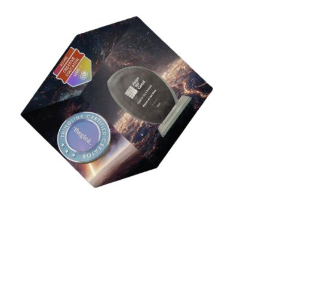
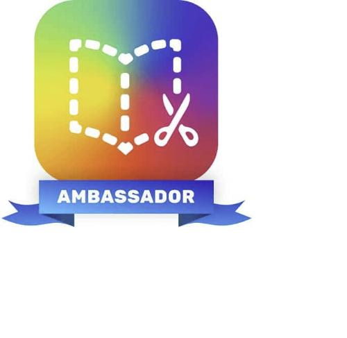

<meta charset="UTF-8">
<meta name="viewport" content="width=device-width, initial-scale=1">
<title>Techembrace | AI Strategy, Learning Transformation &amp; Neurodiversity Moonshot</title>
<meta name="description" content="Techembrace is a strategic consultancy helping organisations build a real competitive moat through AI strategy, immersive learning design, and ethical governance. 35+ years of expertise, led by Daniel Mullings.">
<link rel="icon" href="assets/images/favicon-32.png" sizes="32x32" type="image/png">
<link rel="icon" href="assets/images/favicon-512.png" sizes="512x512" type="image/png">
<link rel="apple-touch-icon" href="assets/images/favicon-180.png">
<link rel="preconnect" href="https://fonts.googleapis.com">
<link href="https://fonts.googleapis.com/css2?family=Inter:wght@400;500;600;700;800&display=swap" rel="stylesheet">
<link rel="stylesheet" href="assets/css/styles.css">

<header class="site-header">
  <div class="container">
    <a href="/" class="logo"> Techembrace</a>
    <nav class="main-nav">
      <ul>
        <li><a href="/">Home</a></li>
        <li><a href="about">About</a></li>
        <li><a href="our-services">Services</a></li>
        <li><a href="projects">Projects</a></li>
        <li><a href="ai-ethics-safety">AI Ethics</a></li>
        <li><a href="contact-us">Contact us</a></li>
      </ul>
    </nav>
    <div class="header-cta">
      <a href="contact-us" class="btn btn-primary">Get started</a>
      <button class="nav-toggle" aria-label="Toggle menu">☰</button>
    </div>
  </div>
</header>

<main>
  <!-- HERO -->
  <section class="hero">
    <div class="container">
      <div class="hero-pill"><span class="dot"></span> Available for New Projects</div>
      <div class="hero-grid">
        <div>
          <h1>learn. <em>Transform.</em> Lead.</h1>
          <p class="lead">Helping organisations build a defensible competitive advantage through Learning Transformation — powered by 35+ years of strategic expertise.</p>
          <div class="hero-actions">
            <a href="contact-us" class="btn btn-primary">Schedule a call</a>
            <a href="our-services" class="btn btn-ghost-light">Explore our services</a>
          </div>
        </div>
        <div class="hero-card">
          <h3>Ready to transform your organisation?</h3>
          <a href="contact-us" class="btn btn-dark" style="margin-top:14px;">Schedule a call</a>
          <p class="muted-line">or email us at <strong>info@techembrace.com</strong></p>
        </div>
      </div>
    </div>
  </section>

  <!-- ABOUT -->
  <section>
    <div class="container about-flex">
      <div>
        <span class="eyebrow">About Us</span>
        <h2>Human intelligence, amplified by AI.</h2>
        <p>Techembrace is a strategic consultancy that helps organisations build a real competitive moat — not through software alone, but by redesigning how humans and machines learn and create value together. Led by Daniel Mullings, we bring 35+ years of expertise to every engagement, combining AI strategy, immersive learning design, and ethical governance into a single, cohesive transformation.</p>
        <a href="about" class="btn btn-ghost">Read our story →</a>
      </div>
      <div class="values-grid" style="grid-template-columns:1fr; margin-top:0;">
        <div class="value-card">
          <span class="num">01 · OUR VALUES</span>
          <h3>Human-Centred by Design</h3>
          <p>Technology must serve human values and elevate human potential above all else.</p>
        </div>
        <div class="value-card">
          <span class="num">02</span>
          <h3>The Neurodiversity Moonshot</h3>
          <p>Designing inclusively first creates better systems for everyone — a strategic advantage, not compliance.</p>
        </div>
        <div class="value-card">
          <span class="num">03</span>
          <h3>Return on Learning</h3>
          <p>Every solution is measured by the gain in organisational capability relative to the investment.</p>
        </div>
      </div>
    </div>
  </section>

  <!-- STATS -->
  <section class="bg-soft">
    <div class="container">
      <div class="section-head">
        <span class="eyebrow">Techembrace</span>
        <h2>35 years of evidence. Not just a promise.</h2>
        <p>Anyone can claim to be human-centred. We can prove it — in further education, hospitality, heritage, and enterprise technology.</p>
      </div>
      <div class="stats-grid">
        <div class="stat">
          <div class="n">35<span>+</span></div>
          <p><strong>Years of strategic experience</strong><br>Across Apple, FE colleges, VR/AR, AI creative work, and community heritage projects. The breadth is the advantage.</p>
        </div>
        <div class="stat">
          <div class="n">70<span>%</span></div>
          <p><strong>Reduction in instructor workload</strong><br>75% faster feedback cycles — from 20 minutes to 5 minutes per student submission.</p>
        </div>
        <div class="stat">
          <div class="n">100<span>%</span></div>
          <p><strong>A true strategic partner</strong><br>From initial diagnostic to staff enablement — we stay with you through every phase. Not a vendor. Not a contractor.</p>
        </div>
      </div>
    </div>
  </section>

  <!-- MARKET STATS -->
  <section>
    <div class="container">
      <div class="section-head">
        <span class="eyebrow">Why Now</span>
        <h2>The pressure is real. So is the opportunity.</h2>
      </div>
      <div class="stat-strip">
        <div class="item">
          <div class="num">40%</div>
          <p>of jobs will be significantly affected by AI in the next decade</p>
          <div class="src">Source: IMF, 2024</div>
        </div>
        <div class="item">
          <div class="num">70%</div>
          <p>of AI transformations fail due to poor change management, not technology</p>
          <div class="src">Source: McKinsey</div>
        </div>
        <div class="item">
          <div class="num">£37bn</div>
          <p>productivity gain available to UK businesses through AI adoption</p>
          <div class="src">Source: DSIT, 2023</div>
        </div>
      </div>
    </div>
  </section>

  <!-- PROBLEM PANELS -->
  <section class="bg-soft">
    <div class="container">
      <div class="section-head">
        <span class="eyebrow">From Pressure to Performance</span>
        <h2>Three problems we see in every organisation before AI works.</h2>
      </div>
      <div class="problem-grid">
        <div class="problem-card">
          <h3>The Knowledge Silo Problem</h3>
          <p>Teams using disconnected tools, duplicating effort, institutional knowledge walking out the door with every departure.</p>
          <span class="fix">→ The Data Flywheel fixes this</span>
        </div>
        <div class="problem-card">
          <h3>The No‑RoL Trap</h3>
          <p>Training spend with no measurable return. L&amp;D budgets questioned at every board meeting.</p>
          <span class="fix">→ A live RoL Dashboard fixes this</span>
        </div>
        <div class="problem-card">
          <h3>The Shadow AI Risk</h3>
          <p>Staff quietly using public AI tools — proprietary data entering models you don't control.</p>
          <span class="fix">→ GAT‑M Governance fixes this</span>
        </div>
      </div>
    </div>
  </section>

  <!-- SERVICES -->
  <section id="services">
    <div class="container">
      <div class="section-head">
        <span class="eyebrow">Services</span>
        <h2>Six Pillars. One Transformation.</h2>
        <p>From AI strategy and immersive learning to instructional design and staff enablement — every Techembrace service is built around measurable outcomes, not tool adoption.</p>
      </div>
      <div class="pillars-grid">
        <a href="service-ai-learning-transformation" class="pillar-card">
          <span class="index">01</span>
          <span class="tag">AI Strategy</span>
          <h3>AI‑Driven Learning Transformation</h3>
          <p class="quote">"Build the moat, not just the tools."</p>
        </a>
        <a href="service-immersive-learning" class="pillar-card">
          <span class="index">02</span>
          <span class="tag">Immersive</span>
          <h3>Immersive Learning &amp; Experience Design</h3>
          <p class="quote">"Don't describe it. Take them there."</p>
        </a>
        <a href="service-instructional-design" class="pillar-card">
          <span class="index">03</span>
          <span class="tag">Curriculum</span>
          <h3>Instructional Design &amp; Digital Curriculum</h3>
          <p class="quote">Fast content doesn't teach anyone anything.</p>
        </a>
        <a href="service-edtech-gtm" class="pillar-card">
          <span class="index">04</span>
          <span class="tag">Go-to-Market</span>
          <h3>EdTech &amp; Startup Go‑to‑Market Strategy</h3>
          <p class="quote">Strategy before scale.</p>
        </a>
        <a href="service-staff-enablement" class="pillar-card">
          <span class="index">05</span>
          <span class="tag">Enablement</span>
          <h3>Digital Transformation &amp; Staff Enablement</h3>
          <p class="quote">From sceptic to practitioner.</p>
        </a>
        <a href="service-ai-creative" class="pillar-card">
          <span class="index">06</span>
          <span class="tag">Creative</span>
          <h3>AI Creative, Visual &amp; Audio Strategy</h3>
          <p class="quote">Create what no one else can replicate.</p>
        </a>
      </div>
      <div style="text-align:center; margin-top:44px;">
        <a href="our-services" class="btn btn-primary">Explore all services</a>
      </div>
    </div>
  </section>

  <!-- PORTFOLIO -->
  <section class="bg-soft">
    <div class="container">
      <div class="section-head">
        <span class="eyebrow">Portfolio</span>
        <h2>Real Projects. Measurable Outcomes.</h2>
      </div>
      <div class="portfolio-grid">
        <a href="portfolio-teamchefs" class="project-card" style="width:100%; display:block;display:block; color:inherit; text-decoration:none;">
          
          <div class="body">
            <div class="tags"><span>Pillar 01</span><span>Pillar 02</span><span>Pillar 06</span></div>
            <h3>The AI-Powered Culinary Feedback Loop</h3>
            <p>Instant, Michelin-level AI feedback on plating — 70% less instructor time, 30% more Outstanding grades.</p>
          </div>
        </a>
        <a href="portfolio-ai-governance-audit" class="project-card" style="width:100%; display:block; color:inherit; text-decoration:none;">
          
          <div class="body">
            <div class="tags"><span>Pillar 01</span><span>Pillar 05</span></div>
            <h3>Regulated AI Governance &amp; Risk Audit</h3>
            <p>A missed clause, multi-million-pound exposure — and how we restored 100% SRA compliance.</p>
          </div>
        </a>
        <a href="portfolio-poetry-in-motion" class="project-card" style="width:100%; display:block;display:block; color:inherit; text-decoration:none;">
          
          <div class="body">
            <div class="tags"><span>Pillar 02</span><span>Pillar 03</span><span>Pillar 06</span></div>
            <h3>Multimodal Poetry in Motion</h3>
            <p>Montserrat's volcanic crisis and student poetry, turned into a multimodal digital book — neuro-inclusive by design.</p>
          </div>
        </a>
        <a href="portfolio-aamac-readiness-audit" class="project-card" style="width:100%; display:block;display:block; color:inherit; text-decoration:none;">
          
          <div class="body">
            <div class="tags"><span>Pillar 04</span><span>Pillar 05</span><span>Pillar 06</span></div>
            <h3>The 4-Layer Digital &amp; AI-Search Readiness Audit</h3>
            <p>Repositioning a legacy Apple service provider for the AI-search era — now an 8,500-member community.</p>
          </div>
        </a>
      </div>
    </div>
  </section>

  <!-- TESTIMONIALS -->
  <section>
    <div class="container">
      <div class="section-head">
        <span class="eyebrow">Testimonials</span>
        <h2>Our clients' success stories inspire us every day.</h2>
      </div>
      <div class="testimonial-grid">
        <div class="testimonial-card">
          <p class="quote">"Daniel's enthusiasm and passion for technology has made a huge difference. He introduced me to using AI which has helped broaden the site content to attract a broader audience."</p>
          <div class="testimonial-person">
            
            <div><strong>James Harrison</strong><span>Founder, Sole of Athletes</span></div>
          </div>
        </div>
        <div class="testimonial-card">
          <p class="quote">"Daniel has consistently demonstrated a deep understanding of our needs and a proactive approach. His professionalism, reliability, and willingness to go above and beyond have made him an indispensable asset to our team."</p>
          <div class="testimonial-person">
            <div class="avatar-fallback">JT</div>
            <div><strong>Jamie Taylor</strong><span>Service Director</span></div>
          </div>
        </div>
        <div class="testimonial-card">
          <p class="quote">"From the very beginning, Daniel displayed a remarkable commitment to understanding my business needs. What sets Daniel apart is his invaluable input on marketing strategies as well as offering tools, insights and recommendations setting me &amp; my business up for success."</p>
          <div class="testimonial-person">
            <div class="avatar-fallback">CA</div>
            <div><strong>Coach Ayana O</strong><span>Aro Global Enterprises LLC</span></div>
          </div>
        </div>
        <div class="testimonial-card">
          <p class="quote">"Daniel has been an amazing expert with Apps for Good for many years. Daniel completed sessions with students from across the country and provided them with inspiration and guidance throughout their projects — App Expert of the Year 2020."</p>
          <div class="testimonial-person">
            <div class="avatar-fallback">GM</div>
            <div><strong>Gordon Mullen</strong><span>Lead Business Analyst, EPAM</span></div>
          </div>
        </div>
      </div>
    </div>
  </section>

  <!-- HOW WE WORK -->
  <section class="bg-soft">
    <div class="container">
      <div class="section-head">
        <span class="eyebrow">How we work</span>
        <h2>From first conversation to measurable impact.</h2>
        <p>Every engagement follows a clear path — no ambiguity, no open-ended retainers, no surprises.</p>
      </div>
      <div class="process-grid">
        <div class="process-card">
          <h3>Discover &amp; Diagnose</h3>
          <p>We map your AI maturity, team readiness, and strategic priorities. You receive a Learning Transformation Blueprint — a clear, actionable document, not a generic audit.</p>
        </div>
        <div class="process-card">
          <h3>Design &amp; Development</h3>
          <p>We design the pathways, curriculum, and creative assets your teams will actually use — built around your real workflows, not a generic template.</p>
        </div>
        <div class="process-card">
          <h3>Enhance &amp; Evolve</h3>
          <p>We stay close after launch — measuring Return on Learning, refining what isn't landing, and building the internal champions who keep the transformation compounding.</p>
        </div>
      </div>
    </div>
  </section>

  <!-- RECOGNITION -->
  <section>
    <div class="container">
      <div class="section-head">
        <span class="eyebrow">Recognition</span>
        <h2>Recognised by the organisations that matter.</h2>
      </div>
      <div class="recognition-row">
        <div class="rec-item"><strong>Apple &amp; ThingLink Certified</strong></div>
        <div class="rec-item"><strong>Book Creator Ambassador</strong></div>
      </div>
      <div class="recognition-row" style="margin-top:10px;">
        <div class="rec-item">
          <svg width="48" height="48" viewBox="0 0 48 48" fill="none" style="margin:0 auto 10px;" aria-hidden="true"><circle cx="24" cy="19" r="12" fill="#eef0ff" stroke="#4d5eef" stroke-width="2"/><path d="M24 11l2.2 4.5 5 .7-3.6 3.5.9 5-4.5-2.4-4.5 2.4.9-5-3.6-3.5 5-.7L24 11z" fill="#4d5eef"/><path d="M18 29l-2 8 8-4 8 4-2-8" stroke="#4d5eef" stroke-width="2" stroke-linejoin="round"/></svg>
          <strong>UEL Tech Innovation Award 2024</strong>
        </div>
        <div class="rec-item">
          <svg width="48" height="48" viewBox="0 0 48 48" fill="none" style="margin:0 auto 10px;" aria-hidden="true"><circle cx="24" cy="19" r="12" fill="#eef0ff" stroke="#4d5eef" stroke-width="2"/><path d="M24 11l2.2 4.5 5 .7-3.6 3.5.9 5-4.5-2.4-4.5 2.4.9-5-3.6-3.5 5-.7L24 11z" fill="#4d5eef"/><path d="M18 29l-2 8 8-4 8 4-2-8" stroke="#4d5eef" stroke-width="2" stroke-linejoin="round"/></svg>
          <strong>Apps For Good Award 2020</strong>
        </div>
        <div class="rec-item">
          <svg width="48" height="48" viewBox="0 0 48 48" fill="none" style="margin:0 auto 10px;" aria-hidden="true"><circle cx="24" cy="19" r="12" fill="#eef0ff" stroke="#4d5eef" stroke-width="2"/><path d="M24 11l2.2 4.5 5 .7-3.6 3.5.9 5-4.5-2.4-4.5 2.4.9-5-3.6-3.5 5-.7L24 11z" fill="#4d5eef"/><path d="M18 29l-2 8 8-4 8 4-2-8" stroke="#4d5eef" stroke-width="2" stroke-linejoin="round"/></svg>
          <strong>ImagineArt Featured Creator</strong>
        </div>
      </div>
    </div>
  </section>

  <!-- FAQ -->
  <section class="bg-soft">
    <div class="container">
      <div class="section-head">
        <span class="eyebrow">FAQs</span>
        <h2>Questions we hear most.</h2>
      </div>
      <div class="faq-list">
        <details class="faq-item" open>
          <summary>What does Techembrace actually do?</summary>
          <p>We help organisations redesign how their people learn and work with AI — not by selling tools, but by building the strategy, training, and governance that make AI compound rather than cost. Our work spans six connected service pillars, from AI‑driven learning transformation to immersive experience design.</p>
        </details>
        <details class="faq-item">
          <summary>Which sectors do you work with?</summary>
          <p>Further education and vocational training, hospitality and catering, cultural heritage organisations, small to medium‑sized businesses, and global tech leaders and creative teams. The frameworks are platform‑agnostic and proven across each.</p>
        </details>
        <details class="faq-item">
          <summary>Do I need to know which AI tools to use before we start?</summary>
          <p>No. We're platform‑agnostic by principle — the right tools depend on your data governance requirements, your team's AI maturity, and your strategic priorities, not a vendor relationship. We help you build the capability, not the dependency.</p>
        </details>
        <details class="faq-item">
          <summary>How do you handle AI ethics and data safety?</summary>
          <p>Every engagement runs under our AI Ethics &amp; Safety Commitment: data governance first, human oversight built into every workflow, and clear boundaries on what AI is and isn't trusted to decide. Ask us for the full commitment document.</p>
        </details>
        <details class="faq-item">
          <summary>What does an engagement look like?</summary>
          <p>Every engagement follows the same three‑phase path — Discover &amp; Diagnose, Design &amp; Development, Enhance &amp; Evolve — so you always know what's next and what you'll receive.</p>
        </details>
        <details class="faq-item">
          <summary>How do you measure results?</summary>
          <p>Return on Learning: the gain in organisational capability relative to the investment, tracked against the priorities we agree with you at the diagnostic stage — not vanity metrics.</p>
        </details>
      </div>
    </div>
  </section>

  <!-- CTA -->
  <section>
    <div class="cta-banner">
      <span class="eyebrow" style="background:rgba(255,255,255,.12); color:#fff;">Ready to start?</span>
      <h2>Hi, I'm Daniel Mullings, Founder.</h2>
      <p style="color:rgba(255,255,255,.75); max-width:60ch; margin:0 auto 20px;">Book a free Discovery Call and let's map what a Learning Transformation could look like for your organisation. Response time: within 24 hours.</p>
      <a href="contact-us" class="btn btn-primary">Book a Discovery Call</a>
    </div>
  </section>
</main>

<!-- NEWSLETTER -->
<section class="newsletter">
  <div class="container newsletter-grid">
    <div>
      <h3 style="color:#fff;">🔔 Newsletter</h3>
      <p style="color:rgba(255,255,255,.65); margin:0;">Keep up with our latest updates — subscribe to our newsletter!</p>
    </div>
    <form data-form>
      <input type="text" placeholder="First Name *" required>
      <input type="email" placeholder="Email Address *" required>
      <button type="submit" class="btn btn-primary">Subscribe</button>
    </form>
  </div>
</section>

<footer class="site-footer">
  <div class="container">
    <div class="footer-grid">
      <div>
        <span class="footer-logo"> Techembrace</span>
        <p>Human intelligence, amplified by AI. Strategic learning transformation for organisations who want proof, not promises.</p>
      </div>
      <div>
        <h4>Site</h4>
        <ul>
          <li><a href="/">Home</a></li>
          <li><a href="about">About</a></li>
          <li><a href="our-services">Services</a></li>
          <li><a href="projects">Projects</a></li>
          <li><a href="ai-ethics-safety">AI Ethics & Safety</a></li>
          <li><a href="contact-us">Contact</a></li>
          <li><a href="privacy-policy">Privacy Policy</a></li>
        </ul>
      </div>
      <div>
        <h4>Social Media</h4>
        <ul>
          <li><a href="https://x.com/Techembrace" target="_blank" rel="noopener">X</a></li>
          <li><a href="https://www.facebook.com/TechembraceUK/" target="_blank" rel="noopener">Facebook</a></li>
          <li><a href="https://www.instagram.com/techembrace/" target="_blank" rel="noopener">Instagram</a></li>
          <li><a href="https://www.linkedin.com/company/5235283/" target="_blank" rel="noopener">LinkedIn</a></li>
        </ul>
      </div>
    </div>
    <div class="footer-bottom">
      <span>© All rights reserved 2026</span>
      <span>Made with 💙 by Techembrace.com</span>
    </div>
  </div>
</footer>

<script src="assets/js/main.js"></script>
